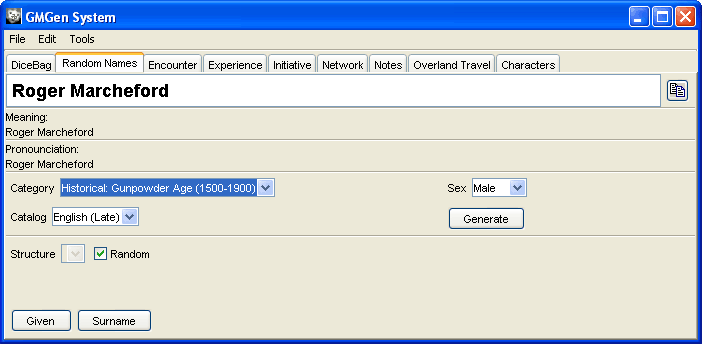

This name generator is different to the one used in PCGen. It allows the generation of NPC names on the fly, allowing filtering by name type and randomisation of different parts of the name. It even give Pronounciation of the generated names!
The generated name appears in large letters at the top of the window. Imediately below is the meaning and pronounciation (if applicable for the name set selected).
The category can be left at "Any" or you can pull down the list and select a race category such as "Fantasy: Dwarven". You can then select a gender from the right pull down list. The contents of the Catalog pull down list will depend on if a category is selected, only applicable name catalogs are displayed. E.g. if you select Fantasy: Elven, only "Deverry Elf" & Middle Earth Elf are displayed. You can no longer see the other options that are not elven names.
A name can then be generated by clicking on the "Generate" button.
Most names are broken into 3 syllables. By taking the tick of "Random", you can controll the generation of any of the syllables by clicking on the relevant button at the bottom of the window.